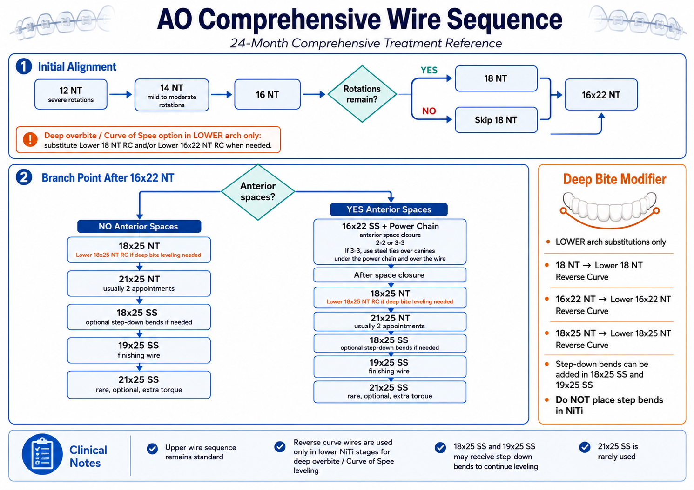
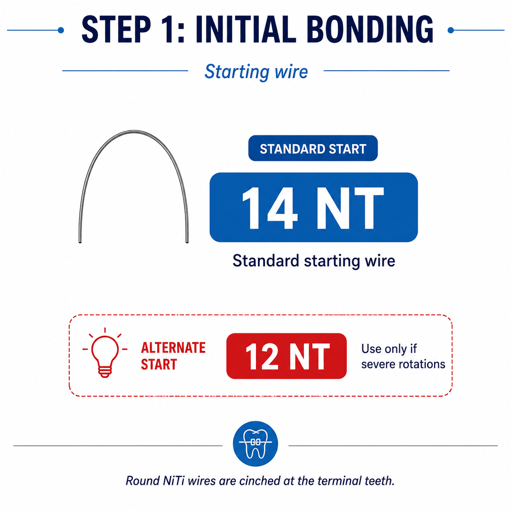
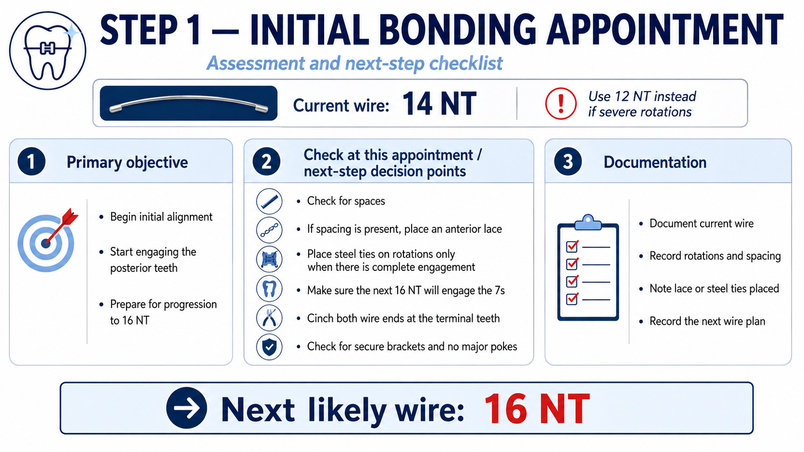
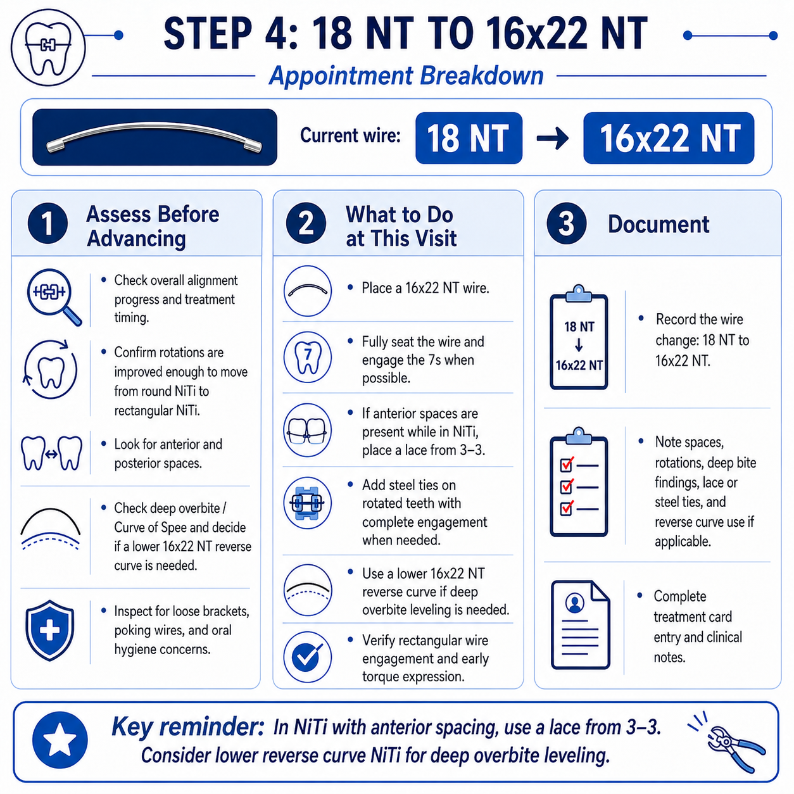
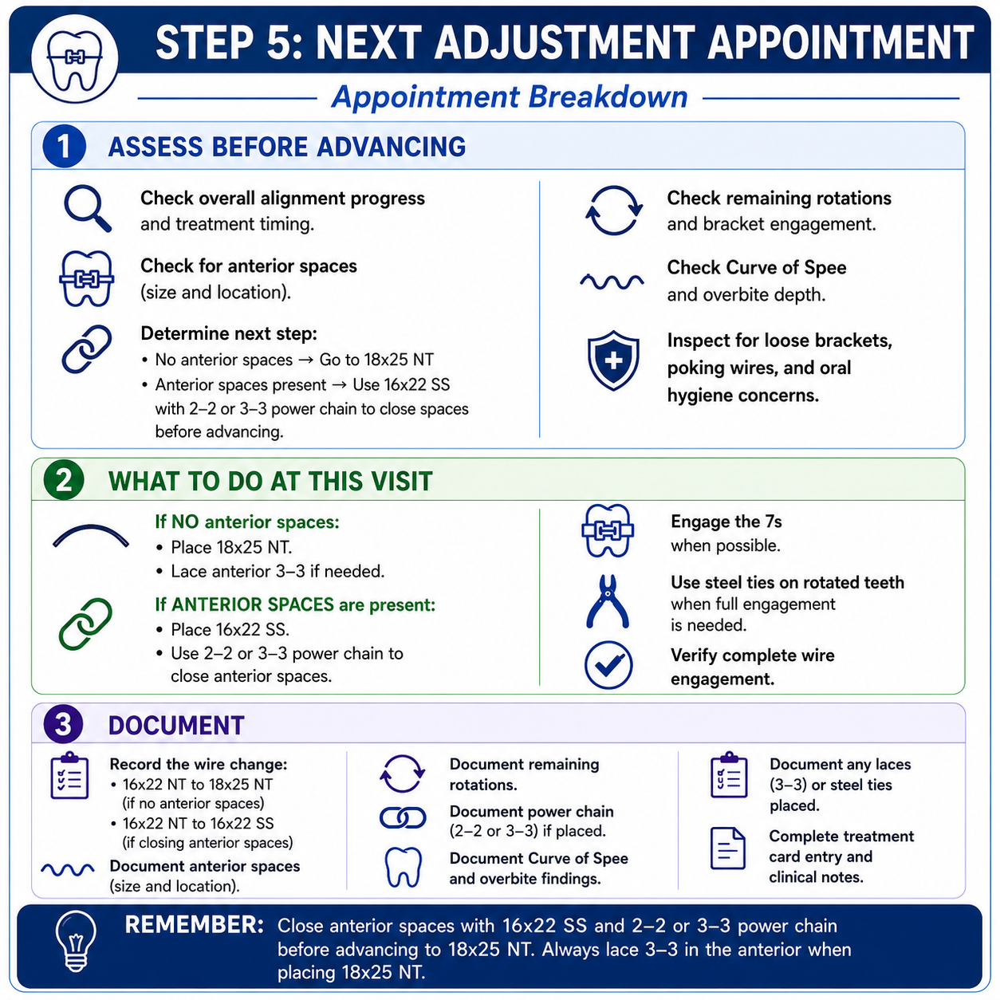

Alexandria OrthodonticsClinical Training ManualAll lessons
Clinical Protocol · Objective-Based Pathway
Wire Progression
The general 24-month nonextraction sequence, from initial bonding to finishing wire.
Ask this at every adjustment
What objective is still unfinished, and what wire or mechanic best accomplishes it? This is a pathway driven by objectives, not a rigid list of wires. The wire is the answer to a question, not the question itself.
Scope
General comprehensive nonextraction treatment only. Extraction cases require a separate protocol, because bonding setup, segmental wiring, extraction timing, and space-closure mechanics all differ. Do not apply this sequence automatically to an extraction case.
Start hereThe whole sequence in one sitting
Watch this first, then use the diagram and the flowchart below as your reference. The nine detailed steps further down are for when you need the specifics of a single appointment.
Watch first · 10 minThe full sequence explained end to end.

Reference · print for the operatoryThe entire sequence on one page, including both branch paths side by side and the lower-arch deep bite substitutions.
OverviewThe master pathway
Tap any step to jump to it.
Round NiTi Rectangular NiTi Stainless steel Decision point
Decision point
Rotations remain, or a 24-month pace → place 18 NT, then Step 4.
Rotations resolved and 18 months or less → skip 18 NT, go straight to 16x22 NT at Step 5.
Decision point
No meaningful anterior spaces → place 18x25 NT with a 3–3 lace.
Anterior spaces remain → place 16x22 SS with 2–2 or 3–3 power chain to close them first, then advance to 18x25 NT.
Rare, optional
A case needing extra torque may progress to 21x25 SS after 19x25 SS. Uncommon.
Some underbite cases finish in 18x25 SS and never reach 19x25 SS.
Timing benchmark
Aim to reach the finishing-wire phase at roughly the halfway point of treatment. For a 24-month case that is around month 12 to 13. For an 18-month case, around month 9. If you are past halfway and not near stainless steel, raise it.
Before the stepsHow to read a case
The five overlapping phases
Phase
Primary objective
1. Alignment
Initial leveling and rotational correction with round NiTi.
2. Leveling
Curve-of-Spee and deep-overbite correction using reverse-curve NiTi, and later step-down bends in stainless steel.
3. Space closure
Anterior spaces first; posterior spaces later, when stronger torque control is available.
4. Bite correction
Vertical, sagittal, midline, and occlusal corrections that may overlap the other phases.
5. Finishing
Torque control, posterior space closure, detailing, settling, and final wire adjustments.
They overlap. A case can be finishing its alignment while starting its leveling.
Appointment assessment order
Check treatment month and overall pace.
Check alignment, rotations, and complete bracket engagement.
Check anterior spaces and whether closure is being maintained.
Check posterior spaces, but do not require them to be closed during the NiTi stages.
Check deep overbite and Curve of Spee.
Check the 7s and overall wire engagement.
Check loose brackets, poking wires, oral hygiene, and anything else that may delay progression.
Select the next wire or mechanic, and document the clinical reason.
Core clinical rules
Rule
AO guideline
Starting wire
14 NT is the routine start. 12 NT is reserved for unusually severe rotations.
Round NiTi cinching
14 NT, 16 NT, and 18 NT are cinched at the terminal teeth.
18 NT is optional
Use it when rotations remain or the timeline allows. Skip it when alignment is adequate and the case should progress efficiently.
Anterior spacing in NiTi
Use an anterior 3–3 lace to hold closure or prevent spaces opening. Do not rely on early NiTi power chain for active closure.
Anterior space closure
Close meaningful anterior spaces on stainless steel, most commonly 16x22 SS, using 2–2 or 3–3 power chain.
Canine steel ties
With 3–3 power chain, steel ties may be placed over the canines, under the power chain and over the archwire.
Posterior space closure
Posterior spaces are intentionally allowed to remain through the NiTi sequence, and are usually addressed later in stainless steel, especially 19x25 SS, for better torque control.
21x25 NT power chain
May be used all around, but expect only limited closure — the wire is thick and NiTi friction is high.
Finishing wire
19x25 SS is the usual finishing wire. Some underbite cases finish in 18x25 SS. 21x25 SS is rare, reserved for additional torque.
Deep overbite and reverse-curve NiTi
The rule that gets broken
Do not place step bends in NiTi. For a deep overbite or pronounced lower Curve of Spee, substitute the corresponding lower reverse-curve NiTi wire for the standard lower NiTi wire, with the anterior portion directed down. Once you are in stainless steel, step-down bends are allowed.
Standard lower stage
Deep-bite modification
Note
18 NT
18 NT reverse curve
Anterior portion down
16x22 NT
16x22 NT reverse curve
Anterior portion down
18x25 NT
18x25 NT reverse curve
Anterior portion down
18x25 SS
18x25 SS + step-down bends
Bends allowed in stainless steel
19x25 SS
19x25 SS + step-down bends
Bends allowed in stainless steel
The nine stepsStep by step
Step 01
Initial Bonding
14 NT

Wire progressionStandard start 14 NT, alternate 12 NT for severe rotations.

Appointment breakdownAssessment and next-step checklist.
Key reminderRound NiTi wires (14 NT, 16 NT, 18 NT) are cinched at the terminal teeth.
Written detail
Assess
Severity of rotations, to choose 14 NT versus rare 12 NT.
Anterior spacing at the time of bonding.
Bracket placement and that planned teeth are bonded for a nonextraction case.
Whether posterior engagement is reasonable for the starting wire.
Oral hygiene and immediate bracket or wire concerns.
Do
Place 14 NT in most cases; 12 NT only for severe rotations.
Cinch both ends of the round NiTi at the terminal teeth.
If anterior spacing is present, place an anterior 3–3 lace to prevent opening and possibly gain minor closure.
Steel ties on rotated teeth only when complete engagement can be achieved.
Wire progressionStandard progression once rotations are improved.

Appointment breakdownAssess, treat, and document.
Key reminderThis is the major transition from round NiTi to rectangular NiTi. In NiTi with anterior spacing, use a lace from 3–3. Consider lower reverse-curve NiTi for deep overbite leveling.
Written detail
Assess
That rotations have improved sufficiently.
Overall alignment and treatment timing.
Anterior and posterior spacing.
Deep overbite and Curve of Spee.
The 7s and full wire engagement.
Do
Place 16x22 NT.
Engage the 7s when possible.
Maintain anterior spaces with a 3–3 lace if present.
Steel ties on rotated teeth when complete engagement is needed.
For deep lower Curve of Spee, use a lower 16x22 NT reverse curve, anterior portion down.
Wire progressionThe branch: no anterior spaces goes to 18x25 NT, spaces present goes to 16x22 SS first.

Appointment breakdownAssess, treat, and document.
Key reminderAnterior spaces should be closed before continuing through the later NiTi stages. Posterior spaces may remain. Always lace 3–3 in the anterior when placing 18x25 NT.
Written detail
Assess
Anterior spaces: size, location, and whether fully closed.
Rotations and complete bracket engagement.
Treatment timing.
Deep overbite and Curve of Spee.
Posterior spaces, but do not require them closed at this stage.
Do
No meaningful anterior spaces: place 18x25 NT and maintain closure with a 3–3 lace.
Anterior spaces remain: place 16x22 SS and use 2–2 or 3–3 power chain to actively close them.
With 3–3 power chain, steel-tie canines as indicated.
Once closed, progress to 18x25 NT and lace anterior 3–3.
For deep lower Curve of Spee, use lower 18x25 NT reverse curve. No step bends in NiTi.
Document
16x22 NT → 18x25 NT, or 16x22 NT → 16x22 SS.
Anterior-space status and power-chain location if used.
3–3 lace, rotations, steel ties, bite and Curve-of-Spee findings.
TroubleshootingDecision points that change the path
Finding
Action
Severe rotations at bonding
Start 12 NT instead of 14 NT.
Rotations still present at 16 NT
Use 18 NT before 16x22 NT.
No rotations, shorter timeline
May skip 18 NT and proceed to 16x22 NT.
Anterior spaces in NiTi
Use a 3–3 lace to hold or maintain. Active closure waits for stainless steel.
Anterior spaces at 16x22 NT
Use 16x22 SS with 2–2 or 3–3 power chain before 18x25 NT.
Deep overbite / Curve of Spee
Lower reverse-curve NiTi at the matching NiTi stage; step-down bends later in stainless steel.
Posterior spaces
Do not require closure during NiTi. Manage later in SS, especially 19x25 SS.
Underbite finishing
Selected cases may finish in 18x25 SS.
Additional torque needed
Rarely, progress to 21x25 SS after 19x25 SS.
DocumentationWhat the note has to explain
The standard
The chart should explain why the patient progressed or remained in the current wire — not simply state that a wire was changed.
Month __ / planned __ months.
Current wire: __. New wire / reactivation: __.
Rotations: __.
Anterior spacing: __. 3–3 lace: yes / no.
Posterior spacing: __.
Power chain: location __ / none.
Steel ties: location __ / none.
Deep overbite / Curve of Spee: __.
Reverse-curve NiTi or step-down bends: __.
7s engaged: yes / no.
Bracket/wire issues and oral-hygiene concerns: __.
Doctor instructions / next objective: __.
Example notes
Month 8/24. Rotations improved; no significant anterior spacing. Progressed to lower 16x22 NT reverse curve for deep Curve-of-Spee leveling. 3–3 lace maintained. 7s engaged. Doctor reviewed.
Month 12/24. Anterior spaces closed after 16x22 SS + 3–3 PC. Progressed to 18x25 NT; anterior 3–3 lace placed to maintain closure. Posterior spaces remain and will be addressed later in SS.
Month 15/24. Reactivated 21x25 NT for second round. Anterior closure stable with 3–3 lace. Posterior spaces remain. No significant rotations. Bite improving.
Month 18/24. Progressed 21x25 NT → 18x25 SS. Began posterior space closure. Step-down bends placed for residual deep overbite. Documented finishing mechanics.
Check-off
Sign-off
Walk three active charts with the clinic coordinator and predict the next wire for each before looking at the note. Then compare.